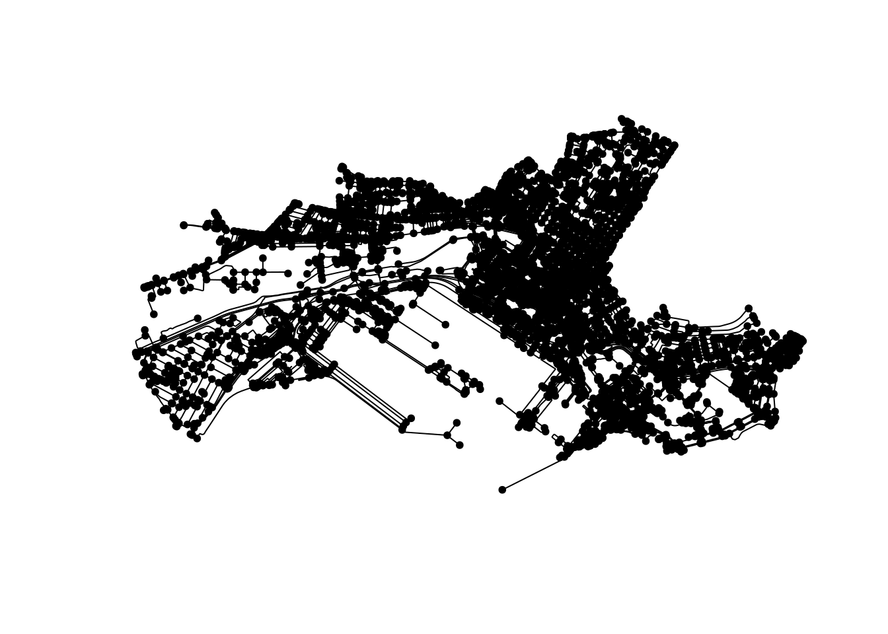

library(ggplot2)
library(ggraph)
library(mapview)
library(sf)
library(sfnetworks)
library(tidygraph)
library(tidyverse)
## Optional libraries depending on the tasks you pick:
library(osmdata)
library(sp)
library(spatstat.linnet)2 Hands-on
We think the best way of learning is by doing. Today you are all spatial network experts and you will be helping different people with some tasks.
We will first load some libraries you need, explain the data we provided for you, do some data pre-processing and finally, you may be able to work on the tasks.
2.1 Libraries
Here we load the necessary libraries for our hands-on session.
2.2 Data
A common source for open geospatial network data is OpenStreetMap (https://www.openstreetmap.org), a crowd-sourced map platform.
We use OpenStreetMap data for the hands-on session and we do so using the osmdata package, which is the R interface to the Overpass API of OpenStreetMap.
Tip
For larger networks, it is not recommended to use the Overpass API for data retrieval. You can better download an OpenStreetMap extract (for example from Geofabrik) and read it into R using the osmextract package.
We have prepared some data for you, so that we don’t overwhelm the OpenStreetMap API. However, this section includes code if you are interested on how to retrieve the data for yourself.
We also queried data from iNaturalist with rinat. And have also saved this into a dataset for your convenience.
2.2.1 Cape Town datasets
If you choose Nicolaas, Annika or Kaya, you will be working with data in Cape Town. We provide you with the following datasets:
- The Cape Town road network data was queried from OpenStreetMap, using the “highway” key.
Unfold me to see how to query road data from OSM
library(osmdata)
# Set bounding box
bounds = "Cape Town Ward 115, South Africa"
# Obtain Cape Town from OSM
bb = getbb(bounds, format_out = 'sf_polygon')
## Roads
# Download OSM data for Cape Town, with the key=highway
roads = opq(bounds) |>
add_osm_feature(key = "highway") |>
osmdata_sf()
# Create a LINESTRING sf object with selected columns
lines = roads |>
pluck("osm_lines") |>
st_intersection(bb) |>
filter(st_is(geometry, c("LINESTRING", "MULTILINESTRING"))) |>
st_cast("LINESTRING") |>
dplyr::select(
name, 'type' = highway,
maxspeed, surface,
lanes, oneway, cycleway
)|>
filter(!type %in% c("bus_stop", "elevator", "steps", "busway",
"corridor", "track", "living_street", NA))
write_sf(
lines,
"data/south-africa/cape-town/cape_town_osm_roads.gpkg"
)- The data is saved as a geopackage (.gpkg). You can load the data using the
sfpackage directly from a URL and then convert it into a sfnetwork. PS. we rename the “geom” column to “geometry” due to a small bug withggraphand called the objectct_roads
Unfold me to see how to load the data
ct_roads = read_sf(
"https://github.com/luukvdmeer/sfnetworks-workshop/raw/refs/heads/main/data/south-africa/cape-town/cape_town_osm_roads.gpkg"
) |>
rename(geometry = geom)- In the tasks below you will find different people who need help with spatial networks. We have compiled here a number of points of interest (POIs) that you will need to complete the tasks.
Unfold me for code to create a sf from point coordinates
## POIs in CT
pois = st_sfc(
st_point(c(18.426465,-33.922584)),
st_point(c(18.422753,-33.909360)),
st_point(c(18.422291,-33.917620)),
crs = 4326
) |>
st_as_sf(place = c(
"Cape Town Station",
"Radisson Red Hotel",
"AfricaWorks CBD"
)
)
write_sf(pois, "data/south-africa/cape-town/cape_town_pois.gpkg")- You can use
sfto load this data. Remember our “geom” rename trick. We called this objectct_pois.
Unfold me to see how to load the data
ct_pois = read_sf(
"https://github.com/luukvdmeer/sfnetworks-workshop/raw/refs/heads/main/data/south-africa/cape-town/cape_town_pois.gpkg"
) |>
rename(geometry = geom)- To help Annika you will need the location of coffee places in Cape Town. For this we queried all the coffee places within the bounds used for the query of the Cape Town road network.
Unfold me for code to query coffee places from OSM
## Coffee places in CT
ct_cafes_osm = opq(bounds) |>
add_osm_feature(key = "amenity", value = "cafe") |>
osmdata_sf()
ct_cafes = bind_rows(
ct_cafes_osm$osm_points,
st_centroid(ct_cafes_osm$osm_polygons)
)
write_sf(ct_cafes, "data/south-africa/cape-town/cape_town_cafes.gpkg")- You can use
sfto load this data. Remember our “geom” rename trick. We called this objectct_cafes.
Unfold me to see how to load the data
ct_cafes = read_sf(
"https://github.com/luukvdmeer/sfnetworks-workshop/raw/refs/heads/main/data/south-africa/cape-town/cape_town_cafes.gpkg"
) |>
rename(geometry = geom) - To help Kaya, you will need data on Cape Town suburbs. We extracted them from OSM using the Ward bounds and the
place=suburbcombination.
Unfold me for code to extract CT suburbs from OSM
ct_suburbs_osm = opq(bounds) |>
add_osm_feature(key = "place", value = "suburb") |>
osmdata_sf()
ct_suburbs = ct_suburbs_osm$osm_multipolygons |>
select(name)
write_sf(ct_suburbs, "data/south-africa/cape-town/cape_town_suburbs.gpkg")- You can use
sfto load this data. Remember our “geom” rename trick. We called this objectct_suburbs.
Unfold me to see how to load the data
ct_suburbs = read_sf(
"https://github.com/luukvdmeer/sfnetworks-workshop/raw/refs/heads/main/data/south-africa/cape-town/cape_town_suburbs.gpkg"
) |>
rename(geometry = geom) 2.2.2 Kruger datasets
If you choose Joseph or Amina, you will be working in Kruger National Park. We prepared the following datasets:
- The Kruger NP road data was queried from OpenStreetMap, using the “highway” key.
Unfold me to see how to query road data from OSM
library(osmdata)
## Bounding box
area = "Kruger National Park, South Africa"
# Obtain Kruger NP boundary from OSM
bb = getbb(area, format_out = 'sf_polygon')
## Roads
# Download OSM data for Kruger NP, with the key=highway
roads = opq(area) |>
add_osm_feature(key = "highway") |>
osmdata_sf() |>
osm_poly2line()
# Create a LINESTRING sf object with selected columns
lines = roads |>
pluck("osm_lines") |>
st_intersection(bb) |>
filter(st_is(geometry, c("LINESTRING", "MULTILINESTRING"))) |>
st_cast("LINESTRING") |>
dplyr::select(
name, 'type' = highway,
maxspeed, surface
)
write_sf(lines, "data/south-africa/kruger/kruger_osm_roads.gpkg")- The data is saved as a geopackage (.gpkg). You can load the data using the
sfpackage directly from a URL and then convert it into a sfnetwork. PS. we rename the “geom” column to “geometry” due to a small bug withggraph. We called this objectkruger_roads.
Unfold me to see how to load the data
kruger_roads = read_sf(
"https://github.com/luukvdmeer/sfnetworks-workshop/raw/refs/heads/main/data/south-africa/kruger/kruger_osm_roads.gpkg"
) |>
rename(geometry = geom)- The Kruger rest camps were obtained from the SANParks website GPS waypoints.
- The table was manually copied to a CSV file and the code below shows how to wrangle the data and convert to an sf. We called this object
kruger_camps.
Unfold me for code to wrangle deg, min, sec data
library(sp)
kruger_camps_raw = read_csv("https://github.com/luukvdmeer/sfnetworks-workshop/raw/refs/heads/main/data/south-africa/kruger/kruger-rest-camps.csv", quote = "'")
kruger_camps = kruger_camps_raw |>
transmute(
camp = Camp,
lat = as.numeric(char2dms(kruger_camps_raw$Latitude, chd = '°', chm = '’', chs = '”')),
lon = as.numeric(char2dms(kruger_camps_raw$Longitude, chd = '°', chm = '’', chs = '”'))
) |>
st_as_sf(coords = c("lon", "lat"), crs = 4326)
write_sf(kruger_camps, "data/south-africa/kruger/kruger_rest_camps.gpkg")- You can use
sfto load this data. Remember our “geom” rename trick. We called this objectkruger_camps.
Unfold me to see how to load the data
kruger_camps = read_sf(
"https://github.com/luukvdmeer/sfnetworks-workshop/raw/refs/heads/main/data/south-africa/kruger/kruger_rest_camps.gpkg"
) |>
rename(geometry = geom)- We queried mammals’ sightings data from iNaturalist. We limited the sightings to Mammals and check on their website the corresponding
place_idfor Kruger National Park.
Unfold me for code to query animal sightings from iNaturalist
library(rinat)
kruger_animals = get_inat_obs(
geo = TRUE,
taxon_name = "Mammalia",
place_id = 69020, # Kruger National Park
maxresults = 2500,
year = 2024
) |> select(-c(sound_url, oauth_application_id))
# Save to CSV
write_csv(
kruger_animals,
"data/south-africa/kruger/kruger_mammalia_inaturalist.csv"
)- The data is saved as a CSV file. You can use
readr, part of thetidyversepackage bundle to read this into R. We called this objectkruger_animals.
Unfold me to see how to read CSV data
kruger_animals = read_csv(
"https://github.com/luukvdmeer/sfnetworks-workshop/raw/refs/heads/main/data/south-africa/kruger/kruger_mammalia_inaturalist.csv",
show_col_types = FALSE
)2.3 Pre-processing
The retrieved streets from OpenStreetMap can be converted into a sfnetwork object, and projected into the South African CRS.
Try to create the sfnetwork yourself. You can check the package documentation to help you. For network creation you can type ?as_sfnetwork on your console.
If you are stuck, check the solution code on the next tabs.
ct_sfn = as_sfnetwork(ct_roads, directed = FALSE, subdivide = TRUE) |>
st_transform(22293)Warning: `create_from_spatial_lines()` assumes all attributes are constant over
geometries.
! Not all attributes are labelled as being constant.
ℹ You can label attribute-geometry relations using `sf::st_set_agr()`.ct_sfn# A sfnetwork: 8783 nodes and 11901 edges
#
# An undirected multigraph with 98 components and spatially explicit edges
#
# Dimension: XY
# Bounding box: xmin: 1348243 ymin: 3849174 xmax: 1356360 ymax: 3853770
# Projected CRS: Cape / Lo33
#
# Node data: 8,783 × 1 (active)
geometry
<POINT [m]>
1 (1352356 3851634)
2 (1352581 3851502)
3 (1352386 3852234)
4 (1353412 3851181)
5 (1353318 3851133)
6 (1352156 3852651)
# ℹ 8,777 more rows
#
# Edge data: 11,901 × 10
from to name type maxspeed surface lanes oneway cycleway
<int> <int> <chr> <chr> <chr> <chr> <chr> <chr> <chr>
1 1 2 Nelson Mandela Boule… moto… 80 asphalt 2 yes <NA>
2 1 3 Nelson Mandela Boule… moto… 80 asphalt 2 yes <NA>
3 4 5 Nelson Mandela Boule… prim… 60 asphalt 4 yes <NA>
# ℹ 11,898 more rows
# ℹ 1 more variable: geometry <LINESTRING [m]>kruger_sfn = as_sfnetwork(kruger_roads, directed = FALSE, subdivide = TRUE) |>
st_transform(22293)Warning: `create_from_spatial_lines()` assumes all attributes are constant over
geometries.
! Not all attributes are labelled as being constant.
ℹ You can label attribute-geometry relations using `sf::st_set_agr()`.kruger_sfn# A sfnetwork: 4690 nodes and 5948 edges
#
# An undirected multigraph with 49 components and spatially explicit edges
#
# Dimension: XY
# Bounding box: xmin: 97437.51 ymin: 2471667 xmax: 216928.7 ymax: 2824573
# Projected CRS: Cape / Lo33
#
# Node data: 4,690 × 1 (active)
geometry
<POINT [m]>
1 (149276.4 2817273)
2 (149292.6 2817293)
3 (149890.7 2818210)
4 (153087 2817568)
5 (155150.3 2816629)
6 (155812.9 2816094)
# ℹ 4,684 more rows
#
# Edge data: 5,948 × 7
from to name type maxspeed surface geometry
<int> <int> <chr> <chr> <chr> <chr> <LINESTRING [m]>
1 1 2 Matjulu Loop unclassif… 50 asphalt (149276.4 2817273, 14928…
2 2 3 Matjulu Loop unclassif… 50 asphalt (149292.6 2817293, 14929…
3 3 4 Matjulu Loop unclassif… 50 asphalt (149890.7 2818210, 14989…
# ℹ 5,945 more rowsA typical workflow to clean a network was shown in the introductory part. Remember when we talked about cleaning the dirty network? For networks queried from OpenStreetMap, it is particularly important to clean your network. You can find more information in the package vignette Cleaning spatial networks.
This is a recap of the usual steps:
- Subdivide the edges
- Smooth pseudo nodes
- Extract the largest component
If you got stuck and can’t remember the code, see the next tabs.
ct_sfn_clean = ct_sfn |>
# convert(to_spatial_subdivision) |>
convert(to_spatial_smooth, .clean = TRUE) |>
convert(to_largest_component)kruger_sfn_clean = kruger_sfn |>
# convert(to_spatial_subdivision) |>
convert(to_spatial_smooth, .clean = TRUE) |>
convert(to_largest_component)A good way to check the network you are dealing with is plotting. sfnetworks has a default plot method, but ggraph allows you a bit more flexibility when plotting your network.
For an interactive view you can use mapview.
If you got stuck and don’t know how to visualize you network, see examples in the next tabs.
To plot a sfnetwork object using the default you can just call the plot() function. You can also pass arguments to the nodes and edges separately. See how by typing ?plot.sfnetwork on your R console.
plot(ct_sfn_clean)
Interactive plots can be created with mapview(). Run the following chunk interactively in your console.
mapview(st_as_sf(ct_sfn_clean, "edges")) +
mapview(st_as_sf(ct_sfn_clean, "nodes"))ggraph extends ggplot2 to support graph structures. Developed by the same person as tidygraph, it was only logical it should work with sfnetworks,,
See more about using ggraph with sfnetworks objects by checking the docs (ggraph website, ?ggraph::geom_node_sf(), ?ggraph::geom_edge_sf())
ggraph(kruger_sfn_clean, "sf") +
geom_node_sf(size = 0.5) +
geom_edge_sf(aes(color = surface)) +
theme_bw()2.4 Tasks
You are spatial network expert and many people need your help for distinct tasks. Below you will get to know a bit about them, what they like and what they need your help with. Pick your favorite.
Nicolaas
Compute the shortest route between Cape Town train station and the Radison Red Hotel where Nicolaas has his meeting.
Hint
You can use the function st_network_paths() to find the shortest paths between nodes in the network. The nodes can be specified as spatial point features. In this case, the function will first find the nearest nodes to those points.
The shortest route is not necessarily the best one for Nicolaas to ride his bike. He prefers to ride on bikelanes, and if they are not available, at least avoid larger roads with heavy traffic. Can you create a custom edge weight that would find the optimal route for Nicolaas, considering the specified preferences? How much longer is this route compared to the shortest route you computed before?
Hint
A custom weighting profile could create a “perceived length” of each edge by multiplying the true length with a multiplication factor that is a function of the road type.
Hint
Take a look at this section in the documentation to find out how to create a simple custom weighting profile. Note that the one is the documentation is meant for cars, so the one you would create for bikes would look different!
Nicolaas is not the only one in Cape Town who would like to use a bicycle to get from A to B. Within the study area, sample 20 origins and 20 destinations of trips that people would like to do by bike. Can you compute for each of them how much longer the optimal route (according to the weights you created before) is compared to the shortest route?
Hint
To randomly sample spatial points, you can use the st_sample() function from the {sf} package.
Hint
When you want to compute travel costs between many origins and destinations, you can use the st_network_cost() function to create a OD cost matrix. If you want to compute costs using custom edge weights, but report the true distance of those routes, this is called dual-weighted routing. Learn here how to do this in {sfnetworks}. Do note that you have to change the routing backend to the {dodgr} package, since the default routing backend (the {igraph} package) does not support dual-weighted routing.
The custom weights for bicycle routing that you used in the previous tasks are very simple. They only prefer bikelanes and avoid large roads. But there is more to bicycle suitability than just that. Can you create bicycle routing weights that take more factors into account? Think for example of slopes (cycling uphill, flat or downhill), comfort (the type of street surface), and the “pleasurability” of the environment (cycling through green areas). You could even think of a weight that is time dependent, with different values during daytime and nighttime.
Hint
If you want to include slopes, we added the Digital Elevation Model (DEM) covering Cape Town to the data for this workshop. With the R package {slopes}, you can compute the slope of linestring geometries based on a provided DEM. See here for an example. For other factors, you can use any additional data from OpenStreetMap by loading it through the {osmdata} package, just as we did for the Cape Town street network.
There is clearly a lack of bike lanes in Cape Town. Assume that the origins and destinations that you sampled in Task 3 are the places people want to bike between. Which streets would you prioritize to build bike lanes along?
Hint
You could base yourself on this paper from Szell et al (2022): Growing Urban Bicycle Networks. In the section “Growing bicycle networks from scratch” on Page 3 they explain a simple workflow to grow a new cycling network. In {sfnetworks}, you can create the “greedy triangulation” using create_from_spatial_points() with connections = "delaunay". Betweenness centrality of edges can be computed using tidygraph::centrality_edge_betweenness(), and closeness centrality of nodes using tidygraph::centrality_closeness().
Annika
How many coffee shops can Annika reach in 15 minutes walking time from her coworking space?
Note
What we are computing here is also known as a location-based accessibility measure. We measure the accessibility of coffee shops from Annikas location. The specific measure you are computing now is one of the simplest, and known as a cumulative opportunities measure.
Hint
To compute travel costs over the network between locations, you can use the function st_network_cost().
Although Annika is willing to walk 15 minutes, she still prefers coffee shops that are closer. In the previous task, all coffee shops within 15 minutes are counted equally, no matter if they are 4 or 14 minutes away. Can you address this by integrating a decay function, that gives lower weights to coffee shops the further they are away from Annika. Then, use those weights to compute a weighted sum of coffee shops within Annikas reach.
Note
This type of accessibility measures with (continuous) decay functions are often referred to a gravity-based accessibility, since they were originally inspired by the concept of gravity, in which the gravitational force between two objects increases as they get closer together.
Hint
A common decay function is exponential decay, in the form \(e^{-\beta}\). Often, \(\beta\) will be estimated using observed travel data, but you can use a value of 0.5. Alternatively, you could use a linear decay function, a step-wise decay function, or anything you find appropriate.
Annika likes some coffee shops more than others, simply because they serve better quality coffee in a cozier atmosphere. For those, she is less picky about the time she has to travel. If the reward is higher, she is does not mind to walk a bit longer! Can you address this by integrating a attractiveness factor, that assign higher weights to those coffee shops that Annika finds attractive. You can either assign the attractiveness randomly, or base it in some way on the available data.
Note
In gravity-based accessibility measures, the attractiveness of destinations is the equivalent of mass in gravity. A higher mass of the object means a higher gravitational force. In practice, however, you will see very few accessibility analysis that actually incorporate any kind of destination attractiveness.
Annika is of course not the only one visiting coffee shops. Within the study area, sample 100 locations of people that want to drink coffee. Assuming all these people opt to go to their nearest coffee shop, how many visitors would each shop have?
Hint
This type of analysis is called a closest facility analysis. An example is given in the package documentation, see here.
Now suppose there were no coffee shops in Cape Town, and you are the first person to start one. Knowing that the people you sampled in Task 4 are your potential customers, and you can choose any network node to start your coffee shop, where would you place it?
Kaya
Kaya has been reading an interesting paper by Barthelemy & Boeing (2024): A Review of the Structure of Street Networks. First, she wants to compute the basic measures mentioned in Table 1, for the study area in Cape Town. Can you help her do this? The measures are:
- The average degree centrality of nodes
- The proportion of dead-ends
- The proportion of intersections where four or more streets come together
- The average street length
Hint
The degree centrality of a node is the number of edges connected to it. This can be computed using tidygraph::centrality_degree(). Dead-ends are nodes with a degree centrality of one. Intersections were four or more streets come together are nodes with a degree centrality higher than four. The length of an edge can be computed using sfnetworks::edge_length().
Kaya also reads in the paper that the detour ratio, or circuity, is an important concept in street networks. This measures how much longer the real streets are compared to the hypothetical situation in which all streets would be straight lines between the nodes. Can you compute this ratio for her?
Hint
To compute the detour ratio of each edge, you can use the function edge_circuity().
Now Kaya wants to replicate Figure 2 of the paper, which maps the betweenness centrality of nodes. Betweenness centrality of a node is the (normalized) proportion of shortest paths (computed between all possible node pairs) that pass through that node. Kaya argues that it is also interesting to compute and map this for edges instead of nodes, i.e. the proportion of shortest paths passing through an edge. Can you help her create these two maps?
Hint
The betweenness centrality of nodes can be computed using tidygraph::centrality_betweenness(), and of edges using tidygraph::centrality_edge_betweenness(). For visualization, we recommend to use the {ggraph} package. An example:
ct_roads |>
mutate(bc = centrality_betweenness()) |>
ggraph("sf") +
geom_edge_sf() +
geom_node_sf(aes(color = bc, size = bc))Finally, Kaya wants to create a polar histogram of street orientations like in Figure 3 of the paper. Besides one for the whole Cape Town study area, she wants to create separate ones for each suburb. Can you help her do this?
Hint
The orientation of edges (relative to the true north, in degrees) can be computed using the function edge_azimuth(). This does require an unprojected coordinate reference system, with longitude and latitude coordinates. Since this is only needed for this specific computation, we can use the morphing workflow of {tidygraph} to temporarily change the coordinate reference system of our network:
ct_azimuths = ct_roads |>
morph(to_spatial_transformed, 4326) |>
activate(edges) |>
mutate(orientation = edge_azimuth(degrees = TRUE)) |>
unmorph()
Hint
To create the polar histograms, use the great {ggplot2} package. Below is some code to do it, but try yourself first! The key is to use the function geom_histogram() in combination with coord_radial().
library(units)
ggplot(st_as_sf(ct_azimuths, "edges")) +
geom_histogram(aes(drop_units(angle)), bins = 72) +
scale_x_continuous(
limits = c(-180, 180),
expand = c(0, 0),
breaks = c(135, 90, 45, 0, -45, -90, -135, -180),
labels = c("S45°E", "E", "N45°E", "N", "N45°W", "W", "S45°W", "S")
) +
coord_radial(start = pi, direction = 1) +
theme_bw() +
theme(
axis.title = element_blank(),
axis.ticks = element_blank(),
axis.text.y = element_blank()
)Joseph
Joseph is a bit tired of having to deal with all these silly tourist questions. He asks you to help him. First up, Gunther from Austria. Are there more lion sightings reported on asphalt roads than on unpaved roads? And does this actually say anything about the probability of Gunther seeing lions when he is on a certain type of road?
Hint
To find the nearest edge to point features, you can use the function nearest_edges() (or nearest_edge_ids() to only get their indices). To regroup the road types into fewer groups, look at the function fct_collapse() of the forcats package.
Answer the second question, from Francois. How does the shortest route visiting all camps once look like?
Note
The problem you are solving here is a specific type of route optimization, commonly known as the traveling salesman problem.
Hint
In {sfnetworks}, you can solve traveling salesman problems using the st_network_travel() function, which provides an interface to the {TSP} package.
To answer Susannes question, find out if there is a (negative?) correlation between the number of big five sightings and distance to rest camps. And does this actually say anything about the probability of seeing them when you are at a certain distance from the camp?
Hint
To compute distances between points on the network, you can use the function st_network_cost(). If the points do not match a node location, they will first be snapped to their nearest node. For more accurate results, it is a good idea to first blend the points into the network (i.e., adding them as new nodes at their nearest location on the network) using the function st_network_blend().
Amina
Amina knows very well that the first step of a spatial analysis is to visually explore the data on a map. Make a map showing the network and the wildlife sightings. You can either choose to map all sightings together, or make some separate maps for different species. It may also be interesting to color edges by an attribute of interest, e.g. the road type, or the number of sightings on each edge.
Hint
For visualization of sfnetwork objects, we recommend to use the {ggraph} package. See here for some examples of how to do this.
On the map Amina sees that the sightings appear to be spatially clustered. She wants to delineate these clusters using a spatial clustering algorithm, based on distances over the network rather than euclidean distances. Can you do this for her?
Hint
The function group_spatial_dbscan() provides an interface to the {dbscan} package that can be used to cluster network nodes using the DBSCAN spatial clustering algorithm, based on network distance. However, we want to cluster the wildlife sightings. This would first require us to add them as nodes to the network, then focus only on those nodes using the new focus() verb of {tidygraph}, and then calling group_spatial_dbscan() on the focused network. Alternatively, you could call the dbscan() function of the {dbscan} package directly, feeding it the network distance matrix of the wildlife sighting locations, as computed with st_network_cost().
However, you are also free to choose any other spatial clustering technique!
Amina decides to analyze the wildlife sightings as a spatial point patterns. Can you see any problems with that approach? Regardless of that, Amina proceeds with her plan. First, she creates a spatial point pattern on a linear network using the {spatstat.linnet} package, which integrates well with {sfnetworks}. Then, she does some standard exploratory analysis:
- Estimating the intensity of the point pattern at each location on the network.
- Assessing if the point pattern is spatially random.
Amina expects that the road surface type is a good predictor for wildlife sightings. Therefore, she fits a point pattern model to the data using road surface type as a covariate.
Can you perform this analysis for Amina? And can you advice her if this model is in any way useful to predict wildlife sightings in the Limpopo National Park? How could she improve her model?
Hint
There is a good integration between {sfnetworks} and the {spatstat.linnet} package for spatial point pattern analysis. Amines analysis could look something like:
# Convert a sfnetwork into a linnet object.
# This cannot handle multiple edges between the same nodes.
# Hence, we need to simplify the network first.
# The network also needs to be connected.
# Hence, we need to select the largest connected component.
linnet = kruger_roads |>
convert(to_spatial_simple) |>
convert(to_largest_component) |>
as.linnet()
# Convert the sightings into a point pattern.
ppp = as.ppp(kruger_animals)
# Convert the point patterns to a point pattern on the network.
lpp = lpp(ppp, linnet)
# Estimate the intensity of the point pattern.
# We use Euclidean distance just to speed up the process.
D = density(lpp, distance = "euclidean")
plot(density)
# Assess spatial randomness.
cdf.test(lpp, "x") # Along the x-axis
cdf.test(lpp, "y") # Along the y-axis
# Reorganize the road surface attribute.
# Less common types get merged into a single type "other".
# NA types get removed.
kruger_roads_new = kruger_roads |>
activate(edges) |>
mutate(surface_new = fct_lump(surface, n = 4)) |>
filter(!is.na(surface_new)) |>
convert(to_largest_component) |>
convert(to_spatial_simple) |>
linnet_new = as.linnet(kruger_roads_new)
# Create a marked tesselation of the network.
# Using surface type as mark.
lintess = lintess(
L = linnet_new,
df = data.frame(
seg = seq_len(n_edges(kruger_roads_new)),
t0 = 0,
t1 = 1,
tile = kruger_roads_new |> activate(edges) |> pull(surface_new)
)
)
# Fit a point process model using road surface as covariate.
M = lppm(unmark(lpp) ~ lintess)
MYou!
Do you have any problems in mind to solve with the provided data, using {sfnetworks}? Go ahead and try it! We are there to help.